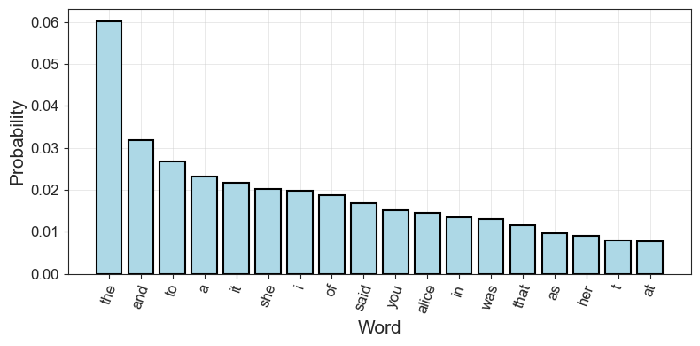
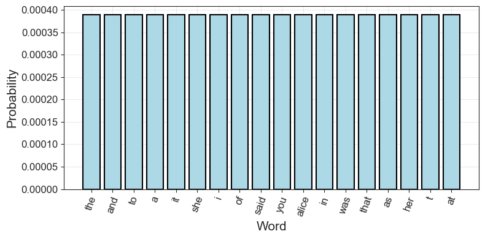
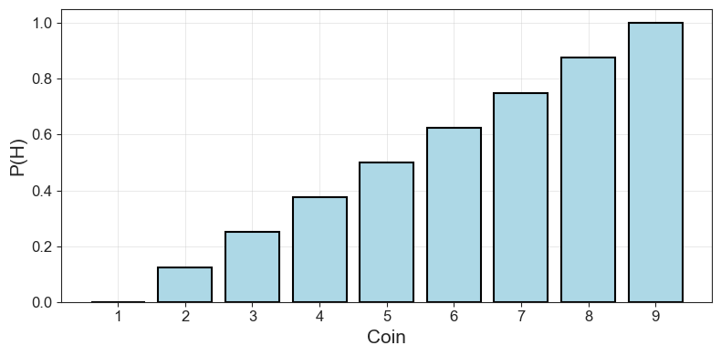
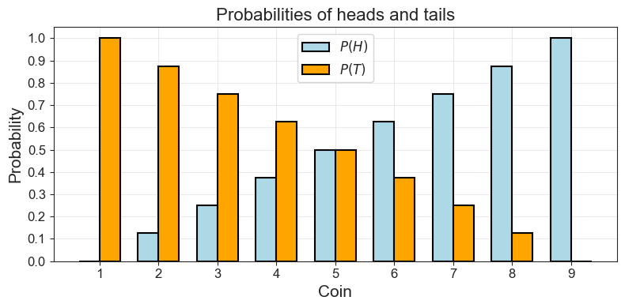
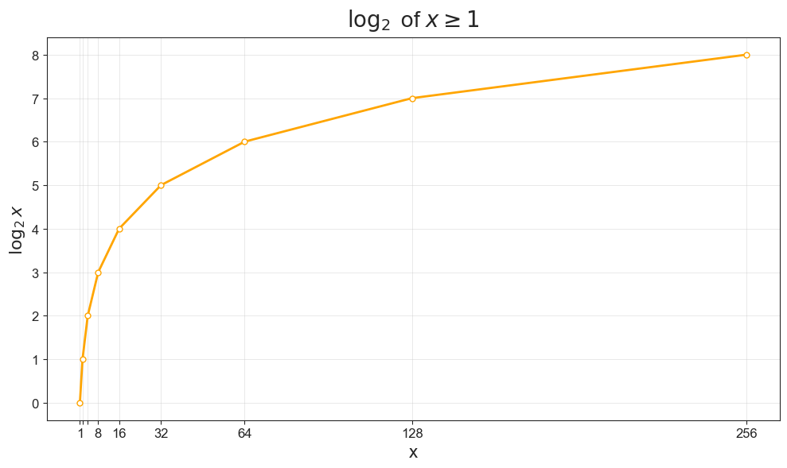
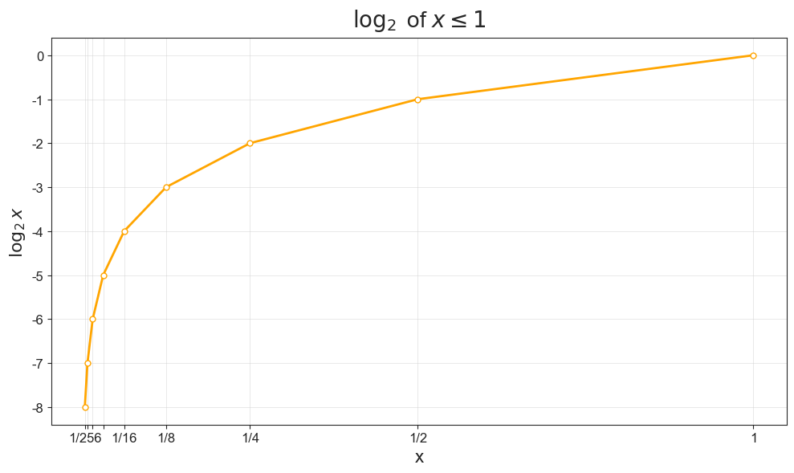

2 Bits: The Difference that Makes a Difference
2.1 The General Commmunications System
Recall from the introdution the “conduit metaphor” that guides not just information theory but more broadly many of our received notions of communications today. As I wrote, this metaphor is most neatly encapsulated in the “General Communication System” deviced by Claude Shannon in a seminal 1948 paper. Shannon envisioned communication as a system with distinct analytical parts, which you can explore in this interactive figure:
Shannon, C. E. (1948). A Mathematical Theory of Communication. The Bell System Technical Journal, 27(3), 379–423. The Bell System Technical Journal. [URL]
What we have here, first, is an information source that selects a message out of a finite set of possible messages. For instance, this might be a person typing on a keyboard. In fact, the message could come from any stochastic and ergodic process, which simply means a random process which, over time, is regular enough to form statistical patterns.
Next, these messages are encoded by a transmitter which converts them into a code. We saw the example of Morse in the introduction. However, here we will be looking at the encoding of messages as the bits, zeroes and ones. When typing on a keyboard, our computer does this for us.
Once the message is encoded as bits, it can be sent over as a signal over a channel. Effectively, the “channel” is all the material infrastructdure between a sender and a receiver, including in our example fiberoptic cables, routers, internet protocols, etc. In this process, some noise might be introduced to the signal. For instance, maybe some bits are scrambled when a data package is lost or perhaps a malicious third party modifies the signal.
Be that as it may, we hopefully reach a receiver that decodes the message, usually by running the inverse operation of the transmitter. In our example, bits are turned into words and the words reach their destination, which Weaver and Shannon (1963, 33—34, 57) defined as “[t]he person or thing for whom the message is intended.”
Shannon, C. E., & Weaver, W. (1963). The Mathematical Theory of Communication (1st paperback). University of Illinois Press.
In this chapter, we will start from the encoding of words as bits in the transmitter. Why bits? And what do we have to assume of language to encode it like that?
2.2 The Information Source: Stochastic Parrots
Information theory as we know it starts from cryptographic work done during World War II by Shannon and others. Whereas the early information theory of the interwar era by people such as Ralph Hartley and Harry Nyquist treated language as a sort of constant to be dealt with in the domain of telephony and telegraphy, Shannon took a different approach. Leaning on insights by earier cryptographers, Shannon approach language as “stochastic” and “ergodic” process. What this suggests is simply that there is statistical regularity to how frequent words are in text.
A language is considered for cryptographic purposes to be a stochastic process which produces a discrete sequence of symbols in accordance with some systems of probabilities.
Shannon, C. E. (1945). A Mathematical Theory of Cryptography—Case 10878. Bell Telephone Laboratories, Princeton Libraries. (p. 2)
What this implies is a strong hypothesis about how language works and about the source that produces the inputs in the General System of Communication. Rather than people choosing words to speak at will, language itself appears as a constraint to which we have to adapt as we speak. Indeed, it is almost as if it was language that used us, rather than the other way around. Before we dive into the world of bits, we need to dwell on this conceptualization of the source that produces the inputs to its systems. This section is dedicated to that task.
Geoghegan, B. D. (2019). Architectures of information—A comparison of Wiener’s and Shannon’s theories of information. In T. Vardouli & O. Touloumi (Eds.), Computer Architectures: Constructing the Common Ground. Routledge. [URL]
In a famous critique of LLMs, Emily Bender and co-authors described these and other language models (LMs) as a “system for haphazardly stitching together sequences of linguistic form”:
Bender, E. M., Gebru, T., McMillan-Major, A., & Shmitchell, S. (2021). On the Dangers of Stochastic Parrots: Can Language Models Be Too Big? 🦜 Proceedings of the 2021 ACM Conference on Fairness, Accountability, and Transparency, 610–623. [URL]
Contrary to how it may seem when we observe its output, an LM is a system for haphazardly stitching together sequences of linguistic forms it has observed in its vast training data, according to probabilistic information about how they combine, but without any reference to meaning a stochastic parrot.
What does it mean? Simply that LMs draw on observed probabilities of words and their co-occurence to form the sentences that we see on services like ChatGPT and Gemini. They treat language as a probability distribution. While LLMs find complex dependencies in how words co-occur over long passages of text, we will start with a much simpler representation of language.
2.2.1 Zipf’s Law
This idea of treating language probabilistically is very old. Already in 1932, the linguist George Zipf had observed that word frequency is inversely proportional to work rank, a regularity which later became known as “Zipf’s law”. Zipf’s Law is an example of one of the most simple language models, an early representation of language as a stochastic process. Zipf’s Law is interesting, because it is based on observed frequencies of words. In this sense, it is a herald of the empirical approach to language that predominates in language modelling today. Using these observed probabilities of individual words, we can already build a simple language model. Let us do just that using Lewis Carroll’s “Alice in Wonderland”. For this purpose, we will use the NLTK library to download the text and to “tokenize” it into individual words.
Code Toggle
import math
import nltk
import numpy as np
import pandas as pd
import random
import seaborn as sns
from collections import Counter
from matplotlib import pyplot as plt
from nltk.corpus import gutenberg
from nltk.tokenize import RegexpTokenizer
nltk.download('punkt_tab')Code Toggle
import sys
sys.path.append('../py')
from plots import (
plot_word_dist,
plot_log,
plot_probability_sequence,
compare_distributions_in_plot
)
sns.set_style("ticks")Using a custom function we can see how this tokenization works:
Code Toggle
def tokens_from_gutenberg_text(txt_name):
sents = gutenberg.sents(txt_name)
words = [word for sent in sents for word in sent]
tokenizer = RegexpTokenizer(r'\w+')
tokens = tokenizer.tokenize(" ".join(words).lower())
return tokens
alice_tokens = tokens_from_gutenberg_text('carroll-alice.txt')
alice_tokens[:10]['alice',
's',
'adventures',
'in',
'wonderland',
'by',
'lewis',
'carroll',
'1865',
'chapter']We can also count the words, to get an initial sense of what kind of distribution to expect:
Code Toggle
alice_counts = Counter(alice_tokens)
alice_counts.most_common(10)[('the', 1642),
('and', 872),
('to', 729),
('a', 632),
('it', 595),
('she', 553),
('i', 543),
('of', 514),
('said', 462),
('you', 411)]2.2.2 A simple language model
What do these counts mean in terms of probabilities? To estimate that, we count how many times each token appears (its frequency) and then divide that by the total number of tokens.
Code Toggle
def get_probs_from_counter(counts: Counter[str]) -> Counter[str]:
total = sum(counts.values())
probs = Counter({token: count / total for token, count in counts.items()})
return probsThe top 10 most common words in Alice in Wonderland are mostly so called “stopwords” (the, and, to, a, etc.) and words relating to dialogue:
Code Toggle
alice_probs = get_probs_from_counter(alice_counts)
alice_probs.most_common(10)[('the', 0.06006731050629207),
('and', 0.03189932689493708),
('to', 0.026668129938542583),
('a', 0.023119695639449808),
('it', 0.021766169154228857),
('she', 0.020229733684518584),
('i', 0.019863915715539946),
('of', 0.0188030436055019),
('said', 0.016900790166812993),
('you', 0.01503511852502195)]Together, the probabilities of these words form a probability distribution. For the 15 most common words, the distribution looks like this:
Code Toggle
plot_word_dist(alice_probs, 'bar')
Once we have a distribution of observed probabilities, we can also draw from it. This means that we sample from our representation of language to produce a sequence of words. This is, effectively, what large language models also do, but with a lot more complicated representations. Nevertheless, what we have at hand is a de facto language model.
To draw a fifty word sentence from our representation of language as it appears in Alice in Wonderland, we can run the following code:
Code Toggle
import random
random.seed(42)
outcomes = list(alice_probs.keys())
sample = random.choices(outcomes, weights=alice_probs.values(), k=50)
print(" ".join(sample))rather in into and cut eat wandered the think in and some in her zealand from and said live alice his been a to king a the the him must his hurry they worried would put offended you sighing which legged i and it the and the but people couldNot a great representation! But it’s also not entirely random. The word “the” appears over and over again, simply because it appears the most often in this (and any given English) text. However, we could work with a completely random sample as well. In this case, we would just give each word the same probability.
Code Toggle
def probs_to_uniform(top_probs, n, n_total):
keys = [k for k, _ in top_probs.most_common(n)]
uniform_prob = 1 / n_total
return Counter({k: uniform_prob for k in keys})
n_tokens = len(alice_tokens)
n_types = len(list(alice_counts.keys()))
alice_uniform = probs_to_uniform(alice_probs, n_types, n_types)
alice_uniform.most_common(10)[('the', 0.00038895371450797355),
('and', 0.00038895371450797355),
('to', 0.00038895371450797355),
('a', 0.00038895371450797355),
('it', 0.00038895371450797355),
('she', 0.00038895371450797355),
('i', 0.00038895371450797355),
('of', 0.00038895371450797355),
('said', 0.00038895371450797355),
('you', 0.00038895371450797355)]Code Toggle
outcomes = list(alice_uniform.keys())
sample = random.choices(outcomes, weights=alice_uniform.values(), k=50)
print(" ".join(sample))floor fell unimportant justice favoured fender live tougher watch remarks believed farmer wig hoped furrows roughly wow way sigh worth jumped fifteenth warning shoulder normans lived anywhere easy knee sudden undertone waving hurrying classics guests race loving twist turned other suddenly houses growls wind seemed girls pictured closed queerest appealedNo the word “the” doesn’t appear a single time! Visually, the probability distribution now looks like this for the first 18 words:
Code Toggle
plot_word_dist(alice_uniform, 'bar')
Unlike our representation using observed word probabilities, we use a simplifying assumption here. We loose all sense of structure, everything becomes uniform. By contrast, the observed probabilities already had some redundancy. We know, for instance, that by always picking the word “the” we will be more likely to correctly predict a draw from the text than always picking the word “alice”.
The redundancy, on the other hand, measures the amount of constraint imposed on a text in the language due to its statistical structure, e.g., in English the high frequency of the letter E, the strong tendency of H to follow T or of L’ to follow Q.
Shannon, C. E. (1951). Prediction and Entropy of Printed English. Bell System Technical Journal, 30(1), 50–64. [URL]
2.3 The Transmitter: Words as Bits
Okay, now we’ve established some key things: - We know what a distribution is - We know that Shannon and other pioneers of cybernetics thought of language as a stochastic process applying to discrete symbols and words - Ergo: Language was a distribution for them - If we know some of the statistical regularities or the “redundancies” of this distribution we can work on problems like cryptography and machine translation. - Zipf’s Law is an example of a very simple approximation of such redundancies, based solely on a generalization from observed word frequencies.
However, in order to do anything practical with this hypothesis about the source, our distributions of interested have to be somehow represented and encoded in order to be transmitted. Let’s revisit the image of the noisy channel. In Morse code, we would encode our words using the long and short codes, encoded as such by a telegraph key. This would be our transmitter. However, Morse is not the most efficient way to represent language.
Basing his ideas on innovations in “Boolean algebra”, Shannon decided that the most intuitive way to represent anything was the most simple one: as “yes” or “no”, 0 or 1. A poll in the coffee room of Bell Labs–where Shannon worked at the time-established that this unit should be known as a “bit” of information.
Shannon, C. E. (1940). A symbolic analysis of relay and switching circuits [Thesis, Massachusetts Institute of Technology]. [URL]
2.3.1 The most simple language
In his original papers, Shannon demonstrated the first principles of information theory using a coin toss, only then moving on to human language. We will follow Shannon there. In fact, a coin toss might be one of the most simple stochastic processes, as it only has two outcomes (heads or tails) and, if the coin is fair, no structure or redundancy.
In order to work with the probabilities of a coin toss in Python, we are going to use numpy to generate probability distributions and show the behavior of coins that are fair (heads and tails are equally likely) and biased (heads is more likely than tails, or vice versa.).
Using the code below, we can generate the probabilities of a coin that is biased towards tails (the first five values) or heads (the last five values).
Code Toggle
p_heads = np.linspace(0, 1, 9)
p_headsarray([0. , 0.125, 0.25 , 0.375, 0.5 , 0.625, 0.75 , 0.875, 1. ])Code Toggle
plot_probability_sequence(p_heads)
Above, we let the probability of heads increase in small increments from 0 to 1. That gives us a list of different values for \(P(H)\), for different “coins” with different biases, if you will. Now we can get a similar sized but inverse list of \(P(T)\) by just taking \(1 - P(H)\).
PROMPT: Generate p_heads using linspace and then use p_heads to create p_tails.
Code Toggle
p_tails = 1 - p_headsPlotting the probabilities of heads and tails for each of our nine coins, we can see how the probability of one falls as the probability for the other goes up.
Code Toggle
compare_distributions_in_plot(list(range(1, 10)),
p_heads,
p_tails,
r'$P(H)$',
r'$P(T)$',
"Coin",
"Probability",
"Probabilities of heads and tails")
This might seem stupidly self-evident, but there is a point here: We are establishing a very simple baseline from which to build up our understanding of bits and information. In fact, how could we represent the possible outcomes of a single and fair coin toss as bits?
PROMPT: If we want to represent a single, fair coin toss as bits, how do we proceed? How many bits do we need in total?
Code Toggle
def print_simple_bit_table(outcome, bits):
n_bits = [len(b) for b in bits]
return pd.DataFrame(
{'outcomes':outcome,
'bits':bits,
'n_bits':n_bits}).style.hide()Code Toggle
print_simple_bit_table(['heads', 'tails'], ['0', '1'])| outcomes | bits | n_bits |
|---|---|---|
| heads | 0 | 1 |
| tails | 1 | 1 |
As you can see, we can represent heads as 0 and tails as 1. And, in total, we need two bits to represent the sample space of a single toss of a fair coin. Using notation from probability and set theory, we might write:
\(A = \{H, T\}\)
Our sample space consists of just two options, and we only need two bits to represent it (assuming each outcome is equally likely!).
PROMPT: Let’s move up. What is the sample space of two successive coin tosses of a fair coin?
PROMPT: If we want to represent this sample space of two coin tosses in bits, how do we do it?
Code Toggle
two_toss_combinations = ['HH', 'HT', 'TT', 'TH']
two_bit_combinations = ['00', '01', '10', '11']
print_simple_bit_table(two_toss_combinations, two_bit_combinations)| outcomes | bits | n_bits |
|---|---|---|
| HH | 00 | 2 |
| HT | 01 | 2 |
| TT | 10 | 2 |
| TH | 11 | 2 |
PROMPT: So far, we have been counting total bits. However, how many questions would we need on average to find out what the outcome was in the last experiment?
Two questions!
First question: Is the first throw heads? If yes, we have \(\{HH, HT\}\) left. If no, we have \(\{TT, TH \}\) left.
Second question: Is the first throw heads? Whatever the answer, only one option will remain.
Of course we could get lucky by asking just one question. Say, for example, the outcome was \(HH\). If we ask “was it heads and heads”, we would’ve needed only one question. But then we would’ve been lucky. On average we need two questions.Bateson, G. (2000). “Double Bind” in Steps to an Ecology of Mind: Collected Essays in Anthropology, Psychiatry, Evolution, and Epistemology. University of Chicago Press.
This was the big innovation from Shannon. A bit is the number of yes-no questions we need to ask in order to know an outcome in an experiment. This is why Gregory Bateson called a bit “the difference which makes a difference.” If we start with the bit \(0\), the \(0\) is the first “difference” which makes the difference that our sequence is one that starts with heads. If we add a \(0\) to the bit sequence, the “difference” which is made determines that the full sequence is \(HH\). Once we get to represent language with bits in the next section, this becomes less tautological.
What is more, this average number of bits that we need to answer as yes-no question was, in fact, how Shannon defined information. Before we go on to formalize this discovery mathematically, let’s build up some more intuition.
Let’s consider an experiment with three trials or tosses. Typing that out is annoying, so we’ll use a helper function for it.
Code Toggle
from itertools import product
def produce_N_combinations(items, N):
return [''.join(x) for x in product(items, repeat = N)]PROMPT: How big is the sample space of eight trials? You can use produce_N_compitations to find out.
Code Toggle
three_toss_combinations = produce_N_combinations(['T', 'H'], 3)
three_toss_combinations['TTT', 'TTH', 'THT', 'THH', 'HTT', 'HTH', 'HHT', 'HHH']PROMPT: How would we encode that in bits? Use produce_N_combinations again, if you want.
Code Toggle
three_bit_combinations = produce_N_combinations(['0', '1'], 3)
three_bit_combinations['000', '001', '010', '011', '100', '101', '110', '111']Code Toggle
print_simple_bit_table(three_toss_combinations,
three_bit_combinations)| outcomes | bits | n_bits |
|---|---|---|
| TTT | 000 | 3 |
| TTH | 001 | 3 |
| THT | 010 | 3 |
| THH | 011 | 3 |
| HTT | 100 | 3 |
| HTH | 101 | 3 |
| HHT | 110 | 3 |
| HHH | 111 | 3 |
PROMPT: How many questions do we need now?
Three questions!
First question: Is the first throw heads? If yes, we have \(\{HTT, HTH, HHT, HHH\}\) left. If no, we have \(\{TTT, TTH, THT, THH \}\) left.
With four options left, we know from above we need just two more questions. So three questions in total!PROMPT: Do you notice some sort of connection between how we build our outcomes and the number of bits we need to describe the distribution?
Yes, there is indeed a connection. And that’s good, because all this counting can get tiresome…
To know how many options we have to choose among, we can use a simple formula. If \(S\) is the number of symbols we can choose from (i.e. 2, because we choose between \(H\) and \(T\)) and \(n\) is the number of combinations of those (3 in the above example), then the number of basic outcomes \(E\) (e.g. \(HH\), \(HT\)) is:
\(E = S^n\)Let’s try it out:
Code Toggle
S = 2
n = 3Code Toggle
E = np.power(S, n)
E.item()8Two outcomes \(H\) and \(T\) can be combined combined in sequences of three in eight different ways, just as we saw above.
PROMPT: How many bits will we need to represent these options?
If we already know \(E\), we can find out how many bits we need by taking the logarithm of \(E\), because the logarithm is simply the inverse of a power:
Code Toggle
np.log2(E).item()3.0In fact, we can count the number of bits we need directly from \(n\) and \(S\):
Code Toggle
n*np.log2(S).item()3.0This is also how Ralph Hartley, an engineer at Bell Labs, defined information in a paper in 1928. For him information was just:
\[ n \cdot \log S \]
But this isn’t the definition of that history settled on, and only applies to uniform distributions where all outcomes are equally likely. In fact, already before Shannon, Hartley and Ralph Nyquist at Bell Labs had defined “intelligence” in the above manner. While entirely satisfactory for uniform distributions, this definition does not work when we stop assuming all outcomes are equally probable. Furthermore, we have not even worked with actual probabilities yet! Instead, we have just assumed uniformity. In order to move away from that assumption, we have to define bits for probabilities.
Before we move on to deal with that in final part of this section, let’s end this one by taking a little detour to understand the logarithm. If you are already familiar with logs, feels free to jump to the last part on bits for probabilities.
2.3.1.1 Aside: What Does the Logarithm Do?
Notice how we used numpy.log2 in the previous section to calculate the number of bits needed to encode our sequence of coin tosses. In, fact, we use \(log_2\) because it assumes \(S=2\), 0 or 1, “yes” or “no”. If we use some other logarithm, it’s no longer the number of bits we are calculating. For instance, using a logarithm of the natural number \(e\) would give us the necessary number of “nats”.
For a very approachable introduction to bits, including intuitive explanations of the logarithm, and information theory more broadly, I recommend the work of information theorist John Pierce.
Pierce, J. R. (1980). An Introduction to Information Theory: Symbols, Signals and Noise. (Second revised edition). Dover Books.
The logarithm to the base 2 of a number is the power to which 2 must be raised to equal the number. We can express the same thing mathematically:
\[ 2^{\log_2 x} = x\\ \]
With our three tosses of heads and tails:
\[ \log_2 8 = 3 \\ 2^{\log_2 8} = 8 \\ 2^3 = 8 \]
Two must be raised to \(3\) to give us 8.
PROMPT: What are the logarithms of the following numbers: 1, 2, 4, 8, 16, 32, 64?
| \(\mathbf{x}\) | \(\mathbf{\log_2 x}\) | why? |
|---|---|---|
| \(1\) | \(0\) | \(2^0 = 1\) |
| \(2\) | \(1\) | \(2^1 = 2\) |
| \(4\) | \(2\) | \(2^2 = 4\) |
| \(8\) | \(3\) | \(2^3 = 8\) |
| \(16\) | \(4\) | \(2^4 = 16\) |
| \(32\) | \(5\) | \(2^5 = 32\) |
| \(64\) | \(6\) | \(2^6 = 64\) |
As we can see when plotting the logarithms, the logarithm of a number \(x\) first grows very quickly, but then slows down.
Code Toggle
plot_log()
2.3.2 Bits for Probabilities
So far we have worked with counts, but we started out asking how we could encode probabilities. How could we make that leap? An interesting property with the logarithm, is that taking the log of a fraction gives us the same result as taking the log of the denominator but negative. So
\[ \log_2 2 = 1 \]
And:
\[ \log_2\frac{1}{2} = - 1 \]
This means that counting logs for a uniform distribution where all events are equally probable is just like working with counts, but negative!
PROMPT: What are the logarithms of the following numbers: \(\frac{1}{2}, \frac{1}{4}, \frac{1}{8}, \frac{1}{16}, \frac{1}{32}, \frac{1}{64}\)
| \(\mathbf{x}\) | \(\mathbf{\log_2 x}\) | why? |
|---|---|---|
| \(1\) | \(0\) | \(2^0 = 1\) |
| \(\frac{1}{2}\) | \(-1\) | \(2^{-1} = \frac{1}{2}\) |
| \(\frac{1}{4}\) | \(-2\) | \(2^{-2} = \frac{1}{4}\) |
| \(\frac{1}{8}\) | \(-3\) | \(2^{-3} = \frac{1}{8}\) |
| \(\frac{1}{16}\) | \(-4\) | \(2^{-4} = \frac{1}{16}\) |
| \(\frac{1}{32}\) | \(-5\) | \(2^{-5} = \frac{1}{32}\) |
| \(\frac{1}{64}\) | \(-6\) | \(2^{-6} = \frac{1}{64}\) |
Plotting the log for our fractional \(x\) values, we can note that the log grows very quickly as we start from very small values and move to larger ones, only to flatten out asymptotically when we approach \(x\).
Code Toggle
plot_log(frac=True)
Okay, given that we can use logarithms to count bits for probabilities, we are ready to move on to a more general definition of information that does not assume uniformity.